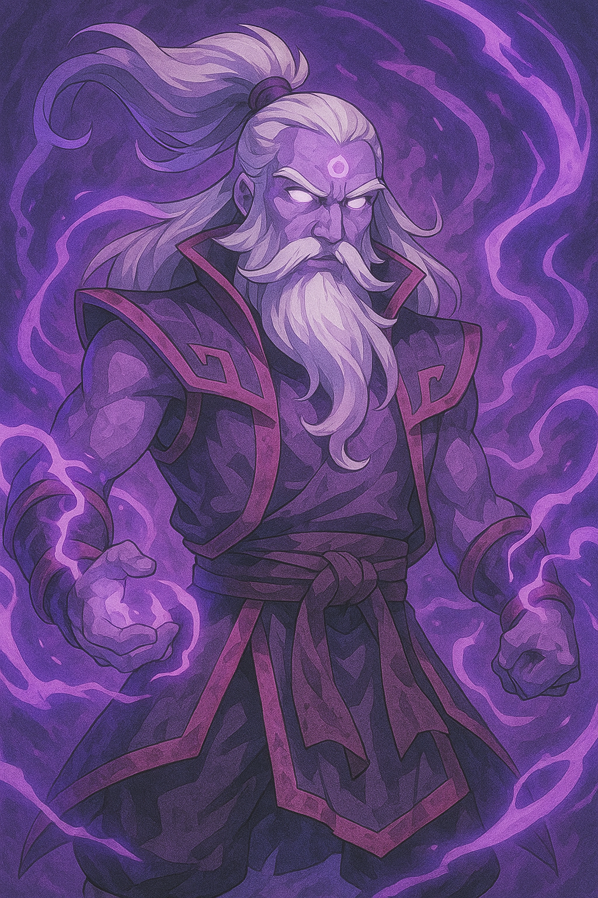
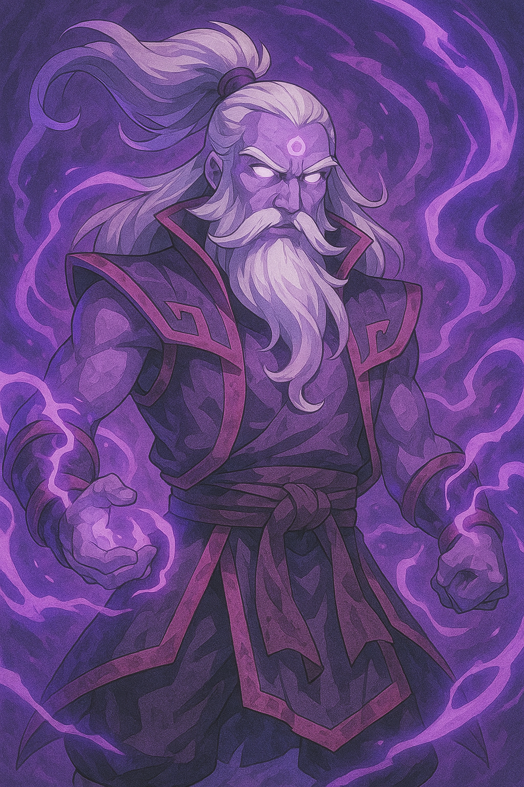

Invoker
Domina el Campo de Batalla en Dota 2
Únete a la comunidad donde la estrategia, la habilidad y el trabajo en equipo hacen la diferencia. Encuentra guías, builds, noticias y mucho más para llevar tu juego al siguiente nivel.

 
